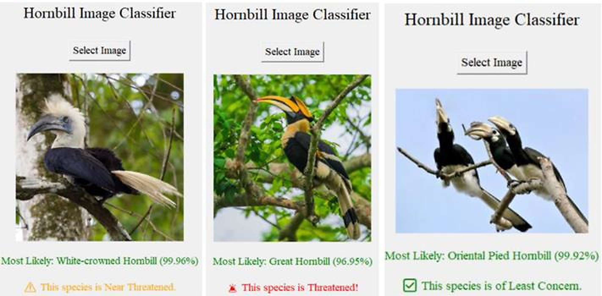

Expert System For Hornbill Classification
An AI-Driven Approach to Species Identification and Preservation Tracking

1. The Problem Statement
Wildlife conservation efforts frequently suffer from a "knowledge bottleneck." Identifying specific species of Hornbills—and instantly understanding their exact ecological preservation status—typically requires highly specialized zoological training. The goal of this project was to build an Artificial Intelligence Expert System capable of mimicking human zoological expertise, allowing non-experts to accurately classify birds in the field.
2. System Architecture & Knowledge Base
To solve this, my team and I engineered a rule-based Expert System using a structured inference engine:
The Knowledge Base
We compiled a comprehensive matrix of Hornbill physical traits, geographical locations, and current preservation statuses, structuring this data into distinct, logical IF-THEN rules capable of being processed by the system.
The Inference Engine
The system utilizes a forward-chaining logic approach. By asking the user a series of targeted questions about observed physical traits, the engine navigates the decision tree, eliminating incorrect species until a definitive classification is reached.
3. Research & Official Publication
Beyond simply writing the code, a major component of this project was validating our logic against established biological taxonomies. Because our system architecture proved highly effective at accurately determining preservation statuses, our team authored a formal research paper on the methodology. I am incredibly proud to say that our work, "Expert System For Hornbill Species Classification and Their Preservation Status," was successfully peer-reviewed and published in the International Journal of Research and Innovation in Social Science (IJRISS).
4. System Demonstration
The final deployed system provides a seamless user interface where field researchers or enthusiasts can input data and receive immediate, scientifically backed identification results.
System Demonstration Video